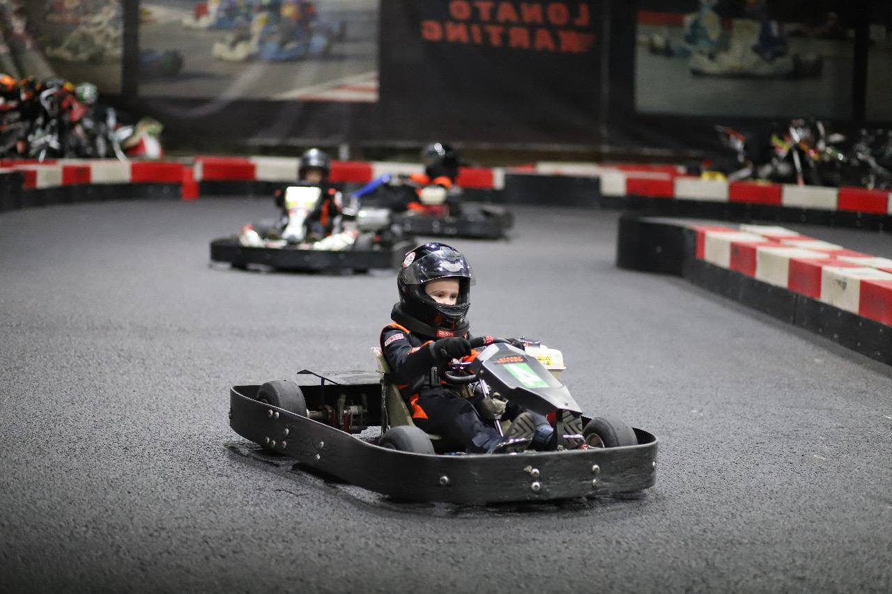
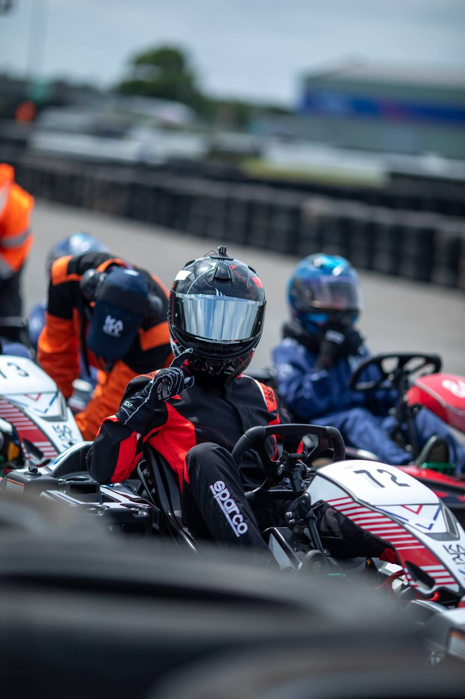
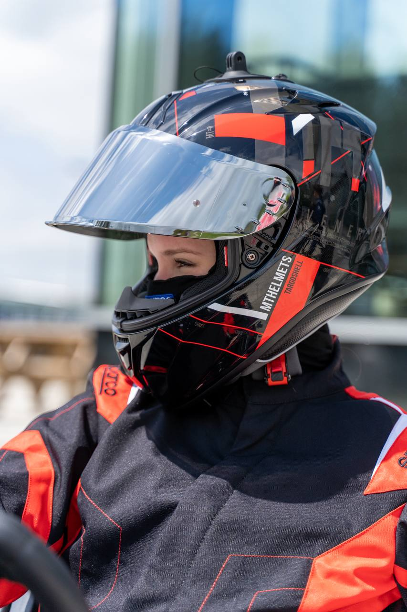
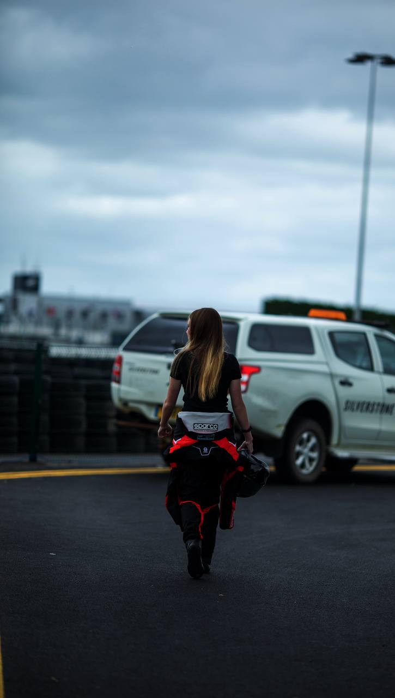

About Me
My story
I am a 15-year-old karting driver with a strong interest in racing, learning and personal improvement. My dad first brought me to karting when I was younger, and later, watching Formula 1 helped me see racing as something I wanted to try more seriously myself.
One of my earliest karting memories is setting a lap time that was much slower than I wanted. Instead of putting me off, it made me want to understand how to improve. That moment is one of the reasons I enjoy karting: every session gives me something to learn.
Outside racing, I would describe myself as organised, hard-working and friendly. I like being part of a community, learning from mistakes and improving step by step.
Racing has taught me patience, persistence and focus, especially when building confidence in traffic and becoming bolder with overtaking in close fights.

Driver Profile
Racing Style and Experience
Racing Type
Indoor and outdoor rental karting
Current Level
Advanced Race Academy driver
Driver Traits
Fast learner, strong in endurance races and teamwork-oriented
Experience
Endurance racer and participant in TeamSport endurance events
How I approach racing
As a karting driver, I compete in indoor and outdoor rental karting. I enjoy racing because it gives me a clear way to measure progress and improve through practice, feedback and experience.
My focus is on becoming more confident in traffic, improving overtaking decisions and bringing lap times down while staying consistent across a full session or race.
Endurance racing is especially important to me because it is not only about speed. It also requires concentration, teamwork, patience, consistency and smart decisions over a longer period of time.
Current Focus
- Overtaking with more confidence
- Staying calm in traffic
- Improving lap times
- Building stronger endurance race experience
Tracks and Experience
Where I race and what I am building
Main Track
TeamSport Reading
Indoor Karting
TeamSport High Wycombe
Indoor Karting
TeamSport Farnborough
Outdoor Karting
Silverstone
TeamSport Reading
My main track is TeamSport Reading, where I regularly take part in Academy racing and members-only nights, including endurance races and Hot Pursuit sessions. This is where I build most of my consistency, confidence in traffic and race craft.
High Wycombe and Farnborough
I also race at TeamSport High Wycombe and TeamSport Farnborough. High Wycombe is one of the more physically demanding tracks for me because it requires stamina and arm strength, which makes it a good challenge for improving control and endurance.
Silverstone
Silverstone is my favourite track because it is large, open and attracts strong drivers to compete against. I have taken part in sprint racing there, which gives me valuable outdoor karting experience and helps me adapt to a different style of racing.
Best lap at TeamSport Reading
Endurance events completed
Consistent race finishes
Across these tracks, I am building experience in sprint racing, endurance racing, traffic management and lap time improvement. My aim is to become a driver who can adapt quickly, stay consistent and keep improving wherever I race.
Gallery
Racing Moments



Goals
Looking Ahead
My goals are to take part in bigger championships, make new connections in the racing community and continue developing as a driver.
I want to keep improving my race craft, gain more experience and build the kind of profile that can help me move forward in karting.
Next Steps
- Improve lap time consistency
- Gain more endurance racing experience
- Build confidence in traffic
- Connect with teams, drivers and sponsors
Sponsors and Racing Community
Open to opportunities
I am interested in connecting with people in the racing community, learning from others and exploring opportunities that can help me grow as a driver.
I am also interested in working with sponsors who want to support a young driver’s progress. I regularly have a photographer available with me, which means high-quality karting photography can be used to give sponsor brands strong visual exposure online and in racing-related content.
For racing opportunities and sponsor enquiries, please contact me through my social media pages.
Sponsor Benefits
- Professional karting photos
- Sponsor logo visibility in racing content
- Progress updates across social media
- Sponsorship credits mentioned on social media pages
- Positive young-driver story with clear development goals